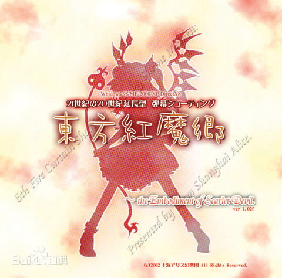

内容包括了喜欢的音乐类型、喜欢的乐队、专辑以及单曲
世界很大，人生很广，音乐总能为平淡的生活添加色彩
然而，正如beatles歌曲中所说的一样，有些音乐已经被遗忘，
而有些歌曲永远留在了回忆之间
一共收集了两种类型的歌曲：摇滚和东方project的歌曲
摇滚
摇滚（Rock and Roll）是一种音乐类型，起源于20世纪40年代末期的美国，20世纪50年代早期开始流行，迅速风靡全球。摇滚乐以其灵活大胆的表现形式和富有激情的音乐节奏表达情感，受到了全世界大多数人的喜爱，并在1960年和1970年形成一股热潮
自摇滚的定义出现，一代摇滚巨匠也现象级地涌入市场。历史上第一首摇滚hit，美国的白人音乐家比尔·哈利在20世纪50年代中期录制的《整日摇滚》（Rock Around the Clock），随着同名电影在青少年群体中近乎疯狂的影响，迅速席卷了整个美国。于是一群穿着笔挺西装、打着领带、头发梳得油光发亮在乐队环绕下放肆舞蹈的摇滚歌手，彻底点燃了美国的大街小巷。初期的摇滚还原始地保留着爵士、蓝调以及乡村音乐的陶染，表演者虽各成一脉，但摇滚乐的主要作用还是使人随它的音乐节奏跳舞，有很强的娱乐性，有的歌词也就无需那么有连贯性，旨在有趣。

东方project
东方Project（日文：東方Project（とうほうプロジェクト），英文：Touhou Project，简称：东方）
是日本同人游戏社团上海爱丽丝幻乐团（即下文所称的「官方」）所制作的一系列同人游戏、相关作品，以及基于前者由爱好者所创作的二次创作所共同构成的覆盖游戏，动漫，音乐，文学等诸多方面的领域。
在部分代理发行商将东方Project相关内容引进到中国市场时1，会使用「东方计划」作为中文名称。